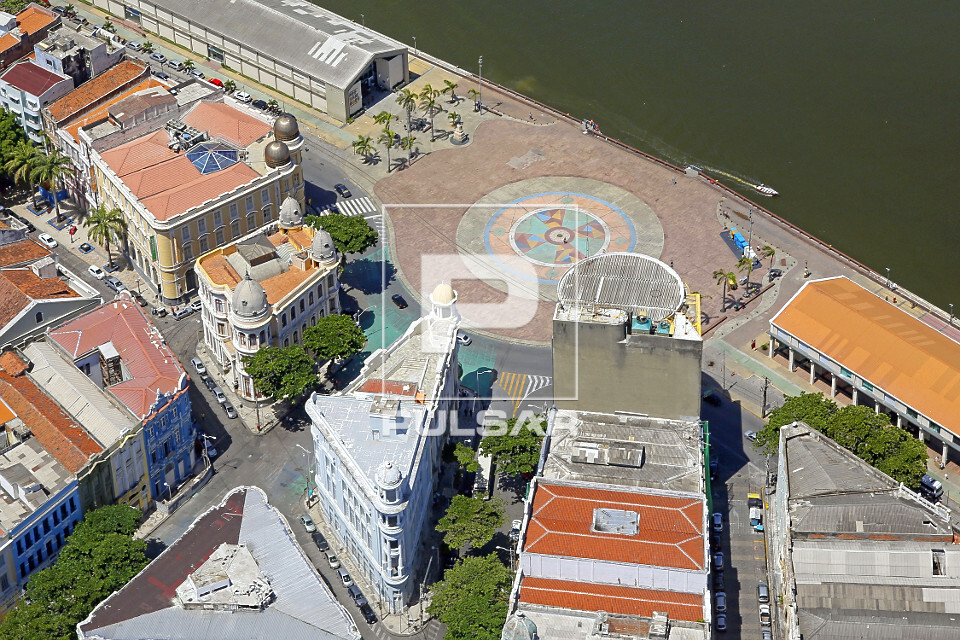

O Marco Zero é um dos pontos turísticos mais importantes da cidade do Recife. Localizado na Praça Rio Branco, no bairro do Recife Antigo, é considerado o centro geográfico da cidade.
O local recebeu este nome porque é o ponto inicial de contagem das distâncias calculadas a partir do Recife. No centro da praça, existe uma rosa dos ventos em granito e bronze, criada pelo artista plástico C. Dias.
Alguns dos principais atrativos do Marco Zero incluem:
- Vista para o Parque de Esculturas de Francisco Brennand
- Proximidade com o Porto do Recife
- Centro cultural Cais do Sertão
- Praça do Arsenal
O Marco Zero é um local perfeito para (horários sujeitos a alterações):
- Passeios diurnos e noturnos
- Eventos culturais
- Fotografias
- Encontro com amigos